Structura For Loop
Se gaseste in grupul Programming-->Structures-->For Loop
Aplicatiile in care la un moment dat trebuie sa repetam anumite parti ale aplicatiilor de un anumit numar de ori, sunt
realizate utilizand structura "For Loop"
Utilizarea structurii For Loop
Structuria "For Loop" este similara instructiunii "for" din C++. Este folosita pentru a repeta o secventa de n ori unde
n este precizat inainte de inceperea repetitiei.
Cea mai populara aplicatie utilizand instructiunea for este afisarea a n naturale la un anumit interval de timp
for_v0_v0 .
Vom relaiza deci in LabVIEW, utilizand structura For Loop o astfel de aplicatie. Pentru a se putea urmari afisarea celor n de numere va trebui introdusa
o temporizare de aproximativ 300 ms.
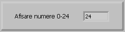
Diagrama bloc va contine structura "For Loop" in interiorul careia se include afisarea numerelor si temporizarea afisarii,
este prezentata in figura de jos:
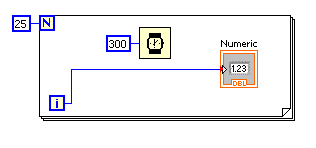
Aplicatia poate fi imbunatatita for_v0_v1 in sensul ca vom pune un
control pentru a stabili intarzierea dintre doua afisari, iar afisarea se va face si analogic folosind un contro; de tip meter.
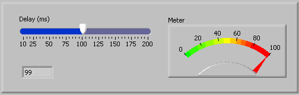
Diagrama bloc va contine structura "For Loop" in interiorul careia se include afisarea numerelor in cele doua controale
cat si temporizarea stabilita de la un control separat.
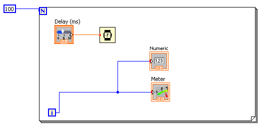
Vom relua aplicatiile cu led-uri for_v0_v2 si vom afisa repetitiv
n numere atat in zecimal cat si in binar utilizand led-uri.
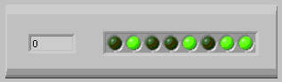
Diagrama bloc va trebui deci sa contina o structura "For Loop" inclusa intr-o structura "While Loop"
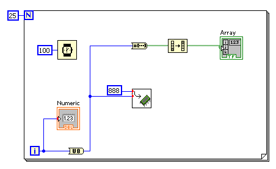
Structura For Loop impreuna cu structura While Loop
Aplicatia anterioara se opreste dupa efectuarea celor 25 de pasi precizati in structura "For Loop"
Pentru a rula in mod continuu, in aplicatia anterioara trebuie sa mai plasam o structrura de programare de tipul
"While Loop" obtinand astfel aplicatia for_v0_v3 .
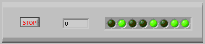
In vederea rularii repetate, pana la apasarea butonului "Stop" se va utiliza deci inca o structura repetitiva de
tipul "While Loop".
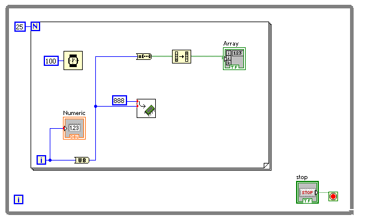
Aplicatia anterioara ruleaza repetitiv pana la apasarea butonului "Stop" dar nu mai repede de terminarea ciclului
"For" in curs de executie. Cu alte cuvinte efectul comenzii "Stop" nu este imediat. Pentru a se observa mai bine acest fenomen, s-a realizat
alicatia for_v0_v4 in care se poate stabili numarul de iteratii.
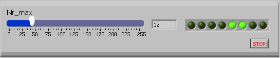
Diagrama bloc va contine legatura de la controlul care furnizeaza numarul de iteratii spre structura "For Loop".
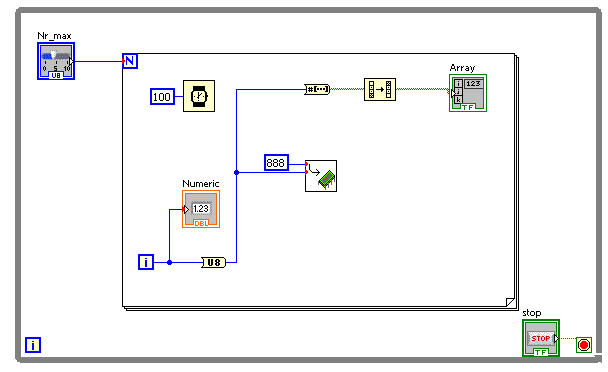
Pentru a corecta neajunsurile amintite mai sus, am putea folosi in urmatoarea
aplicatie, for_v0_v5 o structura "For Loop" in care este validata optiunea "Conditional Terminal".
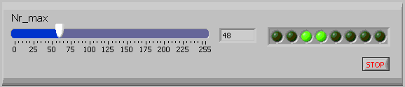
Validarea optiunii "Conditional Terminal" se face folosind click-dreapta pe structura "While Loop".
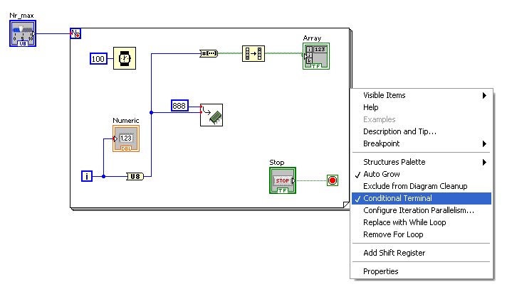
Dezavantajul folosirii acestei metode consta in faptul ca la apasarea butonului "Stop" se iese din aplicatie, deci nu
avem posibilitatea sa reluam rularea aplicatiei decat dupa relansarea ei. Trebuie sa folosim deci in continuare si structura "While Loop" la fel ca
in aplicatia for_v0_v6 :
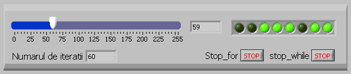
Avem deci doua butoane, unul pentru a stopa structura "For Loop" si unul pentru a stopa structura "While Loop".
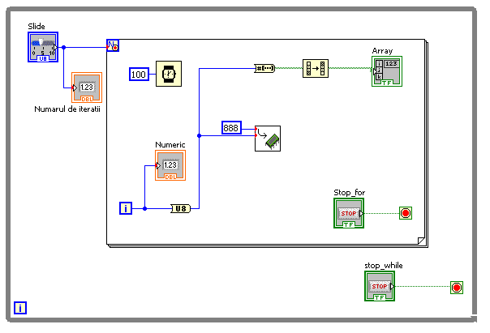
Dupa apasarea butonului "Stop_for" aplicatia se reinitializeaza dar porneste imediat un nou ciclu "For Loop".
Daca dorim sa se opreasca pana la o noua actionare a butonului "Stop_for" va trebui sa modificam comportametul acestui
buton si sa-l transformam intr-un comutator for_v0_v7 .
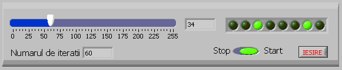
Butonul "Stop_for" se transforma intr-un comutatot "Start-Stop" iar butonul "Stop" are acum semnificatia de
"Iesire" din aplicatie.
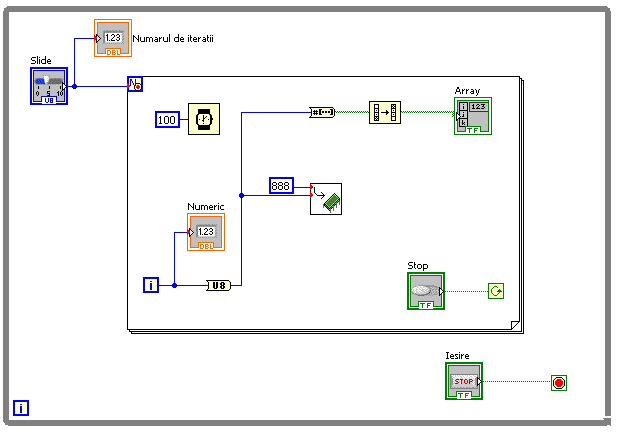
Toate aplicatiile pe care le vom realiza in viitor vor fi cuprinse intr-o structura "While Loop" si vor avea cele
doua butoane "Start-Stop" si "Iesire"
Bazandu-ne pe aceste considerente, aplicatia pentru afisarea a n numere devine:
for_v0_v8 .
In aceasta aplicatie avem posibilitatea opririi si pornirii acesteia, iar in cazul in care se doreste iesirea din aplicatie,
in cazul in care aplicatia este oprita, iesirea din aplicatie se face imediat, ne mai fiind necesara asteptarea terminarii repetiitiilor din cadrul
structurii "For Loop"
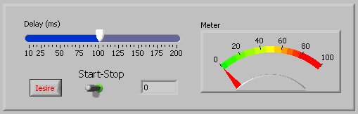
Diagrama bloc fiind:
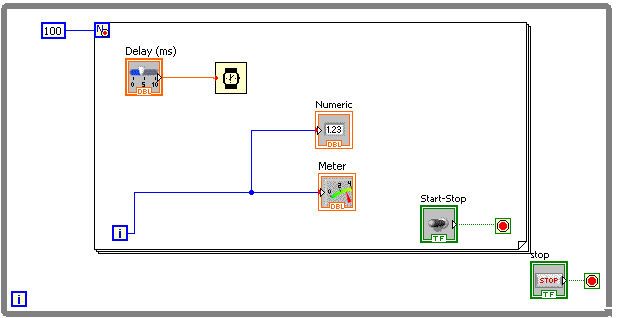
Utilizarea structurii For Loop impreuna cu structurile decizionale
Structuria "For Loop" poate contine la randul ei diverse structuri de programare printre care si structurile de tip
decizional.
Vom relua aplicatia in care s-a realizat un joc de lumini pe led-uri dar de data aceasta secventele vor fi afisate
automat fata sa apasam diverse controale for_v0_v10 .
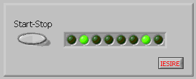
In diagrama bloc, se observa includerea vechii aplicatii intr-o structura "For Loop".
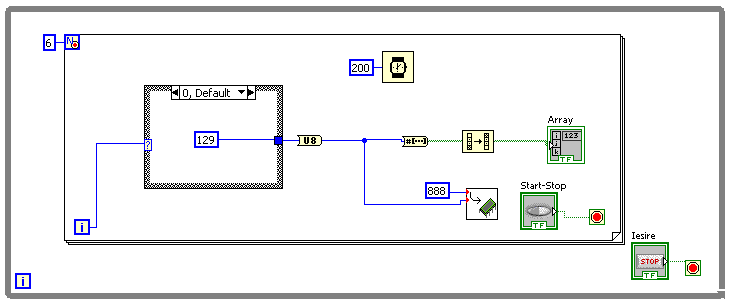
Vom simula acum un afisor pe 7 segmente realizat din led-uri
for_v0_v11
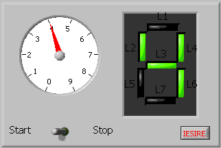
Pentru a comanda corespunzator cele 7 led-uri vom folosi structruri "Case"
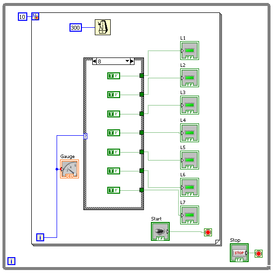
Daca dormin sa realizam un numarator cu numarare inversa (de la 9 la 0)
for_v0_v12 de forma:
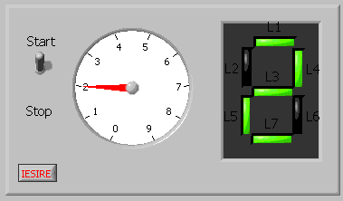
Nu vom mai putea folosi variabila i, va trebui sa introducem o variabila locala.
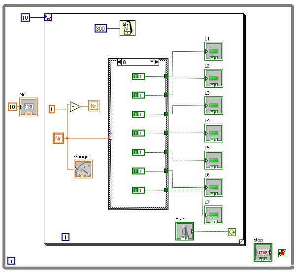
Variabila locala este "Nr", variabila initializata cu 10 la intrarea in structura "For Loop" si este decrementata
dupa fiecare iteratie in cadrul structurii "For Loop".
Utilizarea structurii For Loop pentru realizarea si afisarea graficelor
Pe baza structurilor repetitive vom realiza aplicatii pentru trasarea graficului diverselor functii matematice.
Pentru inceput sa trasam geaficul functiei e^x. Sa realizam aplicatia
for_v0_v00
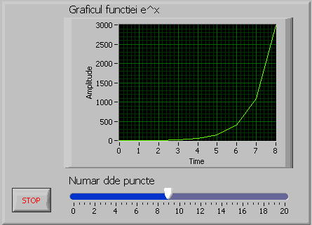
Vom folosi o structura "For Loop" si vom utiliza variabila i care reprezinta iteratia curenta in structura repetitiva,
pe post de variabila x.
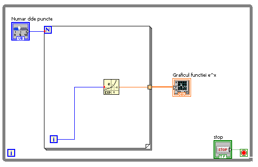
Daca dorim ca afisarea sa se faca dupa ce s-au terminat repetitiile in structura "For Loop" vom plasa un control de tip
Modern-->Graph-->Waveform Graph. Se observa ca legatura intre structura "For Loop" si Waveform Graph este de tip 1D Array.
Dezavantajul folosirii variabilei i pe post de variabila x are dezavantajul ca x nu ia decat valori de tip "Integer"
Pentru a trasa graficul functiei e^x variabila x trebuie sa fie de tip real. Va reebui atunci sa precizam domeniul valorilor de intrare si numarul de
pasi. Numarul de pasi il putem seta setand N, dar pentru domeniu va trebui sa introducem un control suplimentar.
for_v0_v21
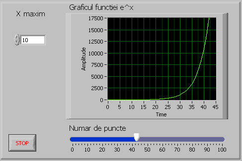
Valoare furnizata de controlul "X maxim" va fi utilizata pentru calculul latimii unui pas in functie de numarul de pasi.
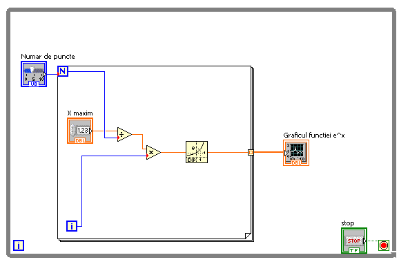
Latimea unui pas este deci : X maxim/Numar de puncte, iar valoarea curenta pentru care se calculeaza valoarea
functiei este i*X maxim/Numar de puncte, dupa cum se poate vedea in diagrama logica de sus.
Sa realizam acum graficul functiei "sin(x)". Dorim sa afisam dinamic graficul acestei functii, in sensul ca vrem sa
modificam perioada, respectiv frecventa acestei functii, si afisarea sa tina cont de aceste modificarri si sa reafiseze corespunzator graficul
acestiei functii. Ne propunem deci mai degraba sa simulam un generator de semnal sinusoidal
for_v0_v22 .
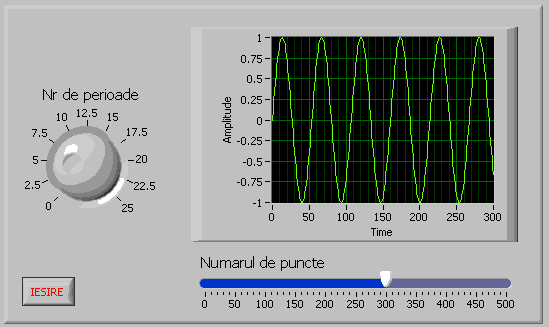
Aplicatia este similara cu aplicatia anterioara cu deosebirea ca nu mai folosim functia e^x ci sin(x).
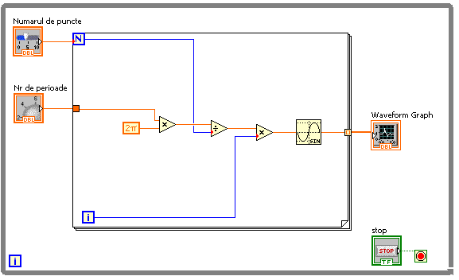
Dupa cum se observa valoarea curenta x=(2*pi*Nr de perioade/Numarul de puncte)*i.
Vom folosi in continuare controlul Waveform Graph pentru a trasa grafice sub forma de histograma
for_v0_v23 .
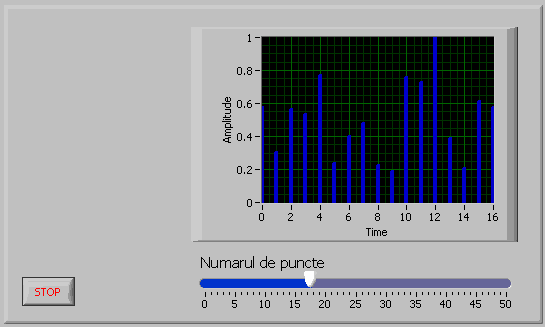
Vom folosi un generator de numere aletoare si vom afisa valoril generate intr-un control de tipul Waveform Graph
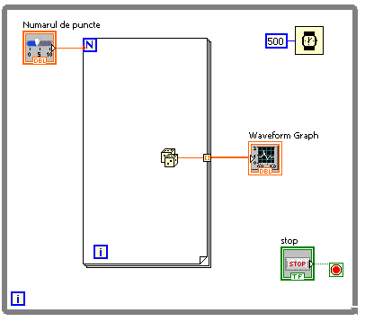
Pentru a obtine afisarea sub forma de histograma, a fost setat corespunzator control de tipul Waveform Graph
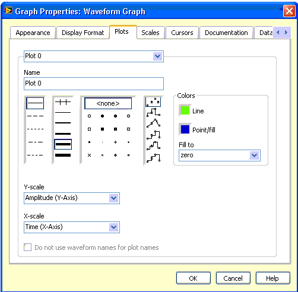
Am folosit pana acum controlul Waveform Graph pentru a trasa evolutia in timp a diverselor functii. Vom folosi in
continuare controlul XY Graph pentru a trasa grafice in coordonatele X si Y.
Vom realiza aplicatia for_v0_v24 in care valoarea coordonatei
X va fi data de functia sin(x) iar valoarea coordonatei Y va fi data de functia cos(y)
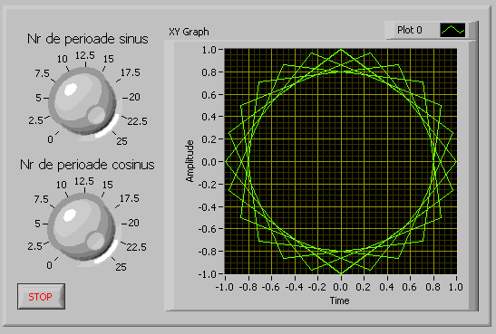
Pe diagrama bloc vom conecta la intrarea controlul XY Graph cele doua valori: sin(x) si cos(y)
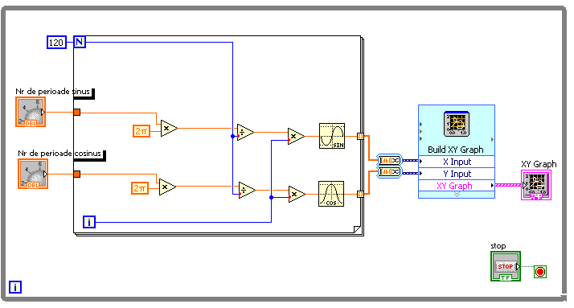
Iesirile din structura "For Loop" sunt de tipul Array saa ca o sa revenim asupra lor in cardul sectiunii
"Utilizarea tablourilor".
Utilizarea structurii "For Loop" pentru grafica si figuri geometrice
Am utilizat facilitatile de trasare a figurilor geometrice si in cadrul sectiunii "Structura While Loop". continuam sa
folosim si in cadrul acestiei sectiuni facilitatile grafice oferite in cadrul mediului de dezvoltare "LabView"
Vom realiza o aplicatie for_v0_v30 in care vom trasa aleator
dreptunghiuri intr-un control de tip "Picture"
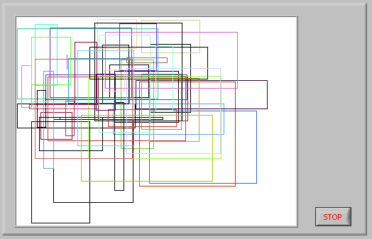
Se va folosi o structura "For Loop" pentru a trasa dreptunghiuri de dimensiuni si culori aleatoare.
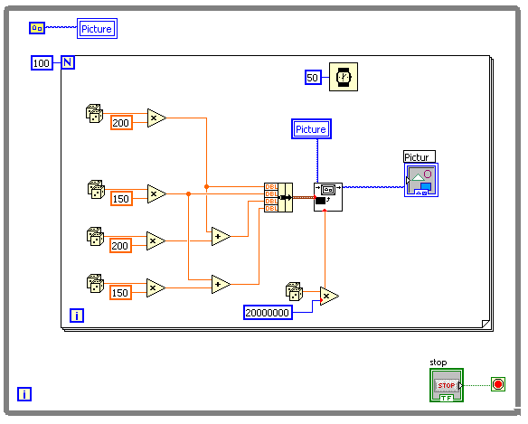
S-a folosit functia "Draw Rectangle" in interiorul unei structuri "For Loop" cu iteratia =100.
Urmatoarea aplicatie for_v0_v31 , traseaza 100 de linii a caror
coordonate sunt incrementate continuu, factorul de incrementare este dat de utilizator prin intermediul unui control.
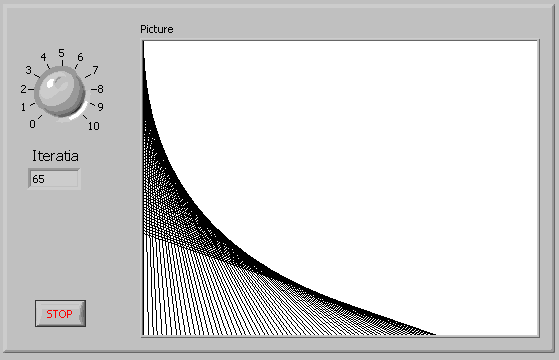
Se va folosi deci functia "Draw Point" si "draw Line" intr-o structrua "For Loop" .
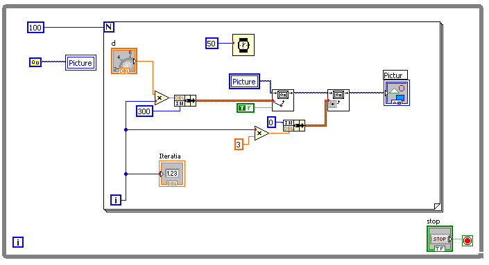
Se observa ca toate liniile au coordonata de inceput x0=0 y0=varibil si coordonata de sfarsit x=xariabil si y=300
In urmatoarea aplicatie for_v0_v32 x0 si y si numarul de
iteratii pot fi setate de utilizator prin intermediul controalelor din imaginea de jos:
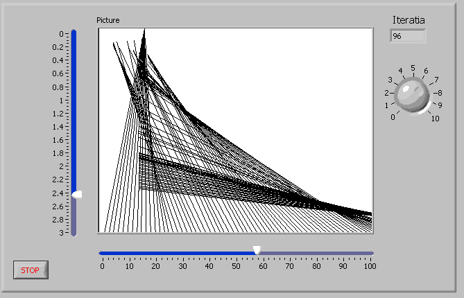
Diagrama logica, reflecta utilizarea acestor controale.
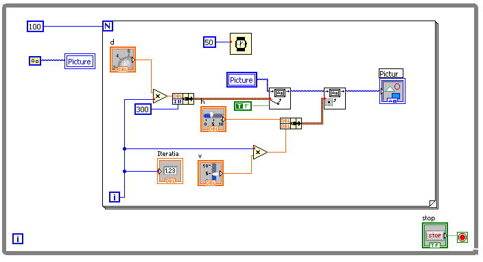